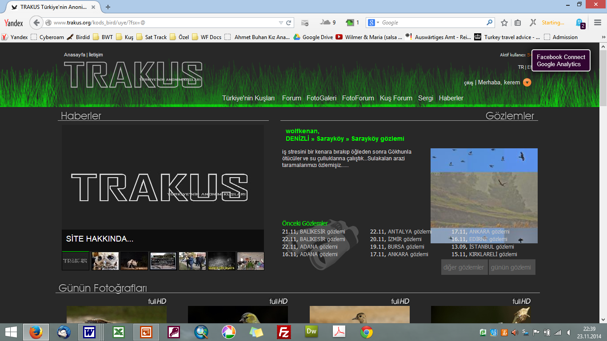

Türkiye Ornitoloji Tarihi
Türkiye’de ornitolojinin ilk dönemlerine dair ilk kapsamlı derleme, Kumerloeve tarafından Türkiye Ornitoloji Derneği (OST - Ornithological Society of Turkey) için hazırlanmıştır. Bu yayında son beş yüzyılda yapılan çalışmalara dair bir özet yer alırken, daha sonra Guy Kirwan, Richard F. Porter, Güneşin Aydemir, Bahtiyar Kurt, Guy M. Kirwan ve Gernant Magnin’in katkılarıyla güncellenmiştir.
Çeviren ve uyarlayan: Bahtiyar Kurt ve Kerem Ali Boyla
İlk Çalışmalar
1548’de Pierre Belon, Suriye’den İstanbul’a geçerken Anadolu’yu ziyaret etmiş ve gözlemlerini 1555’te yayımladığı L’histoire de la nature des Oyseaux adlı eserinde toplamıştır. Bu eser, Anadolu’nun kuşlarına dair ilk yayın olarak tarihe geçmiştir. 1720’de İzmir bölgesinde Britanya Konsolosu olarak görev yapan W. Sherard, bir yalıçapkını yakalamış ve bu tür, Linne tarafından Alcedo smyrnensis (İzmir Yalıçapkını) olarak adlandırılmıştır. Bu örnek aynı zamanda Türkiye’den toplanan ilk kuş örneği olarak kaydedilmiştir. 1792-1796 yılları arasında G.A. Oliver’in gerçekleştirdiği seyahatler ise İstanbul Boğazı’ndaki yelkovanları raporlayan ilk gözlemler olarak kayıtlara geçmiştir.
1800’ler
1835-1836 yıllarında Hugh Strickland’ın İzmir bölgesinde yaptığı gözlemler, bölgede 129 kuş türünü listeliyordu. Yine bir İngiliz olan Keith Abbott, 1835-1837 yılları arasında Trabzon ve Erzurum civarında kuş kayıtları toplamıştır. 1850’lerde Marchese Orazio Antinori, kuş derisi toplama ve ticaretiyle ilgilenmiş ve 1856’da günümüzde Dendrocopus syriacus (Alaca Ağaçkakan) olarak bilinen türü, Osmanlı İmparatorluğu’na bağlı Suriye bölgesinde tanımlamıştır. 1840-1860 yılları arasında fizikçi L. Rigler, İstanbul çevresinde 164 kuş türünü raporlayarak önemli bir katkı sağlamıştır. 19. yüzyılın ikinci yarısında yapılan gözlemler genellikle İstanbul civarında yoğunlaşsa da, Anadolu’nun diğer bölgelerinde de araştırmalar başlamıştı. A. Günther, 1865’te Ibis dergisinde yayımlanan bir makalesinde, İstanbul’da yaşayan Thomas Robson’un toplanan bilgilerinden faydalanarak Uzun Kuyruklu Baştankara’nın yeni bir alttüründen bahsetmiştir. Robson, kendi adına hiçbir yazı yayımlamasa da ornitolojiye olan katkılarıyla dikkat çekmiştir.
1880 yılında Comte Amede Alleon (ve asistanı Vian), dünyayı bölgedeki yoğun leylek ve yırtıcı kuş göçü hakkında bilgilendirmeye başladı. Daha güneyde, 1863-1894 yılları arasında ornitolog ve yumurta-tahnit ticaretiyle uğraşan Theodor Krüper, İzmir ve Yunanistan’da oldukça aktifti. Kendi adını taşıyan sıvacıkuşunun yanı sıra Maskeli Örümcekkuşu, Boz Kuyrukkakan, Taş Bülbülü ve Yaz Atmacası gibi türler üzerine değerli çalışmalar yaptı. Bu dönemde Orta ve Güney Anadolu ornitolojik açıdan neredeyse hiç araştırılmamışken, İngiliz Charles Danford 1870’lerin sonunda bu bölgelere yönelik araştırmalar yürüttü ve Fırat Nehri kıyısında bulunan Birecik’teki Kelaynak kolonisini keşfetti. Dresser, Danford’un bulgularını ele alarak önemli keşiflerde bulundu ve Toros Dağları’nda Urkeklik türünün bir alttürünü tanımladı. Yüzyılın sonlarına doğru Radde (1884) ve Vilkonskij (1897) gibi Rus ornitologlar özellikle Kuzeydoğu Anadolu’daki kuşlar üzerine araştırmalara başladı.
1900 – 1945 arası
Yirminci yüzyılın başlarında İstanbul ve Kuzeybatı Anadolu’dan raporlar sunan Braun (1901-11) öne çıkan isimler arasındaydı. Aynı dönemde Kuzeydoğu ve Doğu Anadolu’da gözlemler yapan Woosnam ve Güney Anadolu’dan kayıt tutan Ramsay da önemli katkılar sağladı. İskenderun ve Belen Geçidi’ndeki leylek göçlerini kaydeden Hubert Lynes de bu dönemin öne çıkan gözlemcilerinden biriydi. Ayrıca Kuzeydoğu Anadolu’da Nesterov, Bobrinkij ve Dombrovskij önderliğindeki Rus bilim insanlarının çalışmaları yüzyılın ilk 20 yılında ağırlık kazandı. Erzurum bölgesindeki çalışmalar ise İngiliz ornitologlar tarafından sürdürüldü ve Weigold Birecik’teki Kelaynak kolonisini birkaç yıl boyunca düzenli olarak ziyaret etti.
1920’de Türkiye’den biyolog Ali Wahby, İstanbul’da kuş kayıtları toplamaya başladı ve Türkiye’nin ilk kuş halkalama çalışmalarını leylekler üzerinde gerçekleştirdi. 1930 ve 1934 yıllarında yayımlanan “Les oiseaux de la région de Stamboul et de ses environs” adlı eser, bir Türk araştırmacı tarafından hazırlanan ilk ornitoloji yayını oldu.
Bu dönemde Otto Steinfatt ve Lutz Mauve, İstanbul Boğazı’nda kapsamlı göç izleme çalışmaları yürüttü. 1933’te Albay Richard Meinertzhagen, Amik Gölü’nü ziyaret ederek Yılanboyun kolonisine ilişkin nadir gözlemlerden bazılarını kaydetti. Kuzey Anadolu’da Hugo Rossner ve Gabriele Neuhauser, Doğu Toroslar ve Güneydoğu Anadolu Dağları’nda C.G. Bird ve E.K. Balls, Karacabey ve Uluabat Gölü’nde Miklos Vasvari ve Imre Patkai gibi araştırmacılar da bu dönemde çalışmalar gerçekleştirdiler. N. J. P. Wadley, İkinci Dünya Savaşı sırasında Türkiye’de kuşları izleyen nadir araştırmacılardan biri olarak yaklaşık 205 tür kaydetti ve gözlemlerini Ibis dergisinde “Notes on the birds of Central Anatolia” başlığı altında yayımladı. 1951’de Türkiye’ye gelen Phil Hollom, Kara İskete ve Ada Martısı gibi önemli türleri gözlemleyerek Türkiye ornitolojisine değerli katkılarda bulundu.
Phil Hollom ve Stanley Cramp Mayıs 1970’te Amik Gölü’nde. Fotoğraf: Richard Porter.
1950 ve 1960’larda Alman Ekolü
1930’larda, Alman Hans Kumerloeve’nin Gunther Niethammer ile birlikte Türkiye’ye yaptığı ilk ziyaretler bu dönemin başlangıcını işaret eder. Kumerloeve’nin hala referans kabul edilen eseri Zur Kenntnis der Avifauna Kleinasiens üzerine temellenmiştir. 1953 yılından itibaren Kumerloeve, Anadolu’da detaylı kuş araştırmalarına başlamış ve 1969’a kadar ülkenin hemen her köşesini dolaşmıştır. Araştırmaları esnasında neredeyse her ay bir makale yayımlayan Kumerloeve, 1986 yılında kuşlar ve memeliler üzerine o güne kadar yapılan yayınların bibliyografyasını da oluşturmuştur. Hans Kumerloeve, 20. yüzyıl Türkiye ornitolojisinin duayeni olarak kabul edilebilir.
Curt Kosswig 1936’da Türkiye’ye gelerek İstanbul Üniversitesi Fen Fakültesi Zooloji Kürsüsü başkanlığına atanmıştır. Manyas Gölü’nde balıkçıllar üzerine yaptığı araştırmalarda, buradaki kuş kolonilerini incelemiş ve alan 1958 yılında “Kuş Cenneti” statüsüyle koruma altına alınmıştır. Asistanı Saadet Ergene de Kosswig’in etkisiyle kuşlar üzerine çalışmaya yönelmiş ve 1945 yılında, doçentlik çalışması olarak hazırladığı ilk resimli Türkçe kuş kitabı olan Türkiye’nin Kuşları yayımlanmıştır.
Profesör Curt Kosswig Nisan 1970’te Manyas Gölü’nde. Fotoğraf: Richard Porter.
Diğer Alman araştırmacılar arasında, İç Anadolu’da çalışmalar yapan Gottfried Vauk, Heinz Lehmann ve ekibi ile Klaus Warncke öne çıkmaktadır. Bu araştırmacılar Tepeli Pelikan, Boz Kaz, Kuğu, Ulu Doğan, Flamingo ve Alamecek gibi türler hakkında veri toplamıştır. 1968’de Willy Bauer ve Günther Müller, Meriç Deltası’ndaki çalışmalarında kuruma tehlikesiyle karşı karşıya kalan alan için bir yönetim planı hazırlamışlardır. Ayrıca, 1967’de Uluslararası Kış Ortası Su Kuşu Sayımları Türkiye’yi de kapsamına almış ve sayımlar J. Szijj ve Hayo Hoekstra tarafından gerçekleştirilmiştir. Sonraki yıllarda bu sayımlar Hollandalı Lieuwe Dijksen ve Fred Koning tarafından sürdürülmüştür.
Richard Porter ve OSME
Richard Porter ve arkadaşları 1966’da İstanbul’a gelerek Boğaz üzerindeki ilk kapsamlı modern kuş göçü sayımını gerçekleştirdi. Porter’ın bu çalışmasına ilham veren kaynaklardan biri, 1880 yılında Alleon ve Vian’ın İstanbul Boğazı’ndaki süzülen kuş göçü üzerine yazıları oldu. Ayrıca, 1950’ler ve 1960’larda Nisbet ve Smout, Ballance ve Lee’nin Ibis dergisinde yayımladıkları yırtıcı göç gözlemleri de Porter için önemli referanslardandı. Bu dönemde C.T. Nisbet, T.C. Smout, D.K. Ballance, S.L.B. Lee ve Hartmut Heckenroth da İstanbul Boğazı’nda benzer göç izleme çalışmaları gerçekleştirdi.
Porter’ın 1966’daki Türkiye ziyaretinde, ülkedeki kuş gözlemcilerin sayısı oldukça sınırlıydı. Milli Parklar bölümünden Tansu Gürpınar ve Manyas Gölü Kuş Cenneti’nin bekçisi Ali Kızılay, bu gözlemcilerin başında gelmekteydi. Gürpınar, Milli Parklar Müdürü Dr. Zeki Bayar’ın desteğiyle Türkiye’de ornitoloji ve doğa koruma hareketini yaygınlaştırmaya yönelik çalışmalar yaptı.
Fotoğraf: Richard Porter ve Tansu Gürpınar 2004 İzmir Kuş Konferansında. Fotoğraf: Richard Porter.
1968’de, Tansu Gürpınar’ın da aralarında bulunduğu çoğunluğu yabancı bir grup, Türkiye Ornitoloji Derneği’ni (OST – Ornithological Society of Turkey) kurarak çalışmalarını daha kurumsal bir zemine taşıdı. Uluslararası Doğayı Koruma Birliği ve Uluslararası Kuşları Koruma Konseyi’nin desteğiyle Ankara, Bursa ve İstanbul’da düzenlenen konferanslar, Türkiye’de yaban hayatının korunması yönünde önemli kararların alınmasını sağladı ve Ramsar Konferansı’nın ilk adımları bu toplantılarda atıldı. OST’un kurulması kararı da bu konferanslarda alınarak hayata geçirildi. 1968-1978 yılları arasında OST, Türkiye için dört kuş raporu ve 15 bülten yayımladı. Türkiye’nin ilk kuş listesi, OST tarafından 1971’de yayımlandı ve bu listede 394 tür yer alırken 251 türün düzenli olarak ülkede ürediği belirtildi. 1976’da Doğu Karadeniz bölgesinde göç izleme çalışmaları sırasında OST’nin tüm Ortadoğu’yu kapsaması fikri doğdu ve 1978’de OSME (Ornithological Society of the Middle East) dünyanın ilk bölgesel kuş gözlem topluluğu olarak kuruldu.
OST dönemindeki çalışmalara katkı sağlayan isimler arasında, OST’nin ilk başkanı olan William Wilkinson da önemli bir yere sahiptir. Wilkinson, dönemin birçok ornitolojik çalışmasının arkasındaki isimdi. Ayrıca, F. Hüe ve R.D. Etchecopar’ın hazırladığı Les Oiseaux du Proche et du Moyen Orient (Yakın ve Orta Doğu Kuşları) adlı çalışma, uzun yıllar boyunca Ortadoğu’daki kuşlar için temel bir başvuru kaynağı olmuştur. OST’nin OSME’ye dönüşmesi sonrasında, OSME’nin dergisi Sandgrouse’da her beş yılda bir Türkiye Kuş Raporları yayımlanmaya devam etti.
1980’lerde Türkiye kuş gözlem tarihinde önemli bir Alman ornitolog devreye girdi: Max Kasparek. Türkiye avifaunası üzerine birçok önemli eser yayımlayan Kasparek’in “Die Vögel der Türkei” adlı çalışması ile, Aygün Kılıç ve Asaf Ertan ile birlikte hazırladığı Türkiye’nin Önemli Kuş Alanları envanteri Türkiye kuş gözlem tarihinde kritik bir yere sahiptir.
Doğal Hayatı Koruma Derneği
1960’ların sonunda ve 1970’lerin başında, Salih Acar ve Belkıs (Acar) Balpınar Türkiye’de gönüllü doğa koruma hareketine öncülük eden bir girişim başlattı. Enerjileri ve vizyonlarıyla Türkiye’de doğa koruma hareketine ilham verdiler ve bu çabaların bir sonucu olarak 1975 yılında Doğal Hayatı Koruma Derneği (DHKD) kuruldu. Bu dönem, OST’nin son yıllarına denk gelirken, aynı zamanda Türkiye ornitolojisinin de başlangıcını işaret ediyordu. 1986’da Uluslararası Kuş Koruma Konseyi (ICBP) (bugünkü BirdLife International), Türkiye’nin kuş çeşitliliği açısından önemini kabul ederek DHKD’yi desteklemek amacıyla Hollandalı araştırmacı Gernant Magnin’i görevlendirdi. 1988’de DHKD bünyesinde çalışmaya başlayan Magnin, Murat Yarar ile birlikte, kuş gözlem ve koruma çalışmaları yapan sınırlı sayıdaki yerli araştırmacıyı bir araya getirdi. Magnin ve Yarar, 1992-1997 yılları arasında yaklaşık yarım milyon kilometre yol katederek birçok kuş verisi topladı ve bu çalışmanın sonucunda 1997 yılında Türkiye’nin Önemli Kuş Alanları kitabı yayımlandı.
DHKD, İstanbul’daki modern ofisi ve deneyimli çalışanlarıyla güçlü bir kurum haline geldi. Çeşitli yabancı kuruluşlarla işbirliği yaparak doğa koruma projeleri geliştirdi; bunlar arasında Fransa’dan Tour du Valat, Wetlands International, Uluslararası Kıyıkuşu ve Sukuşu Araştırma Vakfı (WIWO, Hollanda) ve OSME gibi prestijli kurumlar yer aldı. Özellikle WIWO, Türkiye’nin Önemli Kuş Alanları’nın güncellenmesinde birçok araştırma ve rapor üreterek aktif bir rol üstlendi. DHKD Kuş Bölümü, 1995’te ODTÜ Biyoloji Bölümü’nde tür isimleri konusunda uzmanların katılımıyla bir toplantı düzenledi. Uzlaşı sağlanan tür isimleri, 1996’da DHKD tarafından Türkçe Kuş İsimleri Listesi olarak yayımlandı.
Kuş Gözlem Toplulukları
1990’lı yıllar, Türkiye’de ilk kuş gözlem topluluklarının kuruluşuna tanıklık etti. İlk olarak 1991 yılında Ankara Kuş Gözlem Topluluğu, ardından Hacettepe Üniversitesi Kuş Gözlem Topluluğu (Beykuş) kuruldu. 1995’te kurulan ODTÜ Kuş Gözlem Topluluğu, dönemin en aktif ve uzun ömürlü topluluğu olarak bilinir. 2000 yılında DHKD tarafından başlatılan Önemli Kuş Alanları (ÖKA) İzleme Programı kapsamında birçok kuş gözlem topluluğu daha kuruldu. Bahtiyar Kurt’un liderliğinde DHKD, gözlemcilere kitaplar, dürbünler, teleskoplar ve diğer malzemeleri sağlayarak kuş gözlemciliğinin sistematik bir şekilde büyümesine katkıda bulundu. Kuş gözlemciliğindeki bu büyümeyi sınırlayan en önemli etken, Türkçe kuş rehberi eksikliğiydi. 2002 yılında Collins Kuş Rehberi’nin Kerem Ali Boyla tarafından Türkçe’ye çevrilmesi ve DHKD tarafından yayımlanmasıyla bu sorun giderildi.
Türkiye’deki kuş araştırmacılarının sayısının artması, daha kapsamlı araştırmaların yapılabilmesini sağladı. DHKD, 1998 yılında Konya Havzası’ndaki kuş popülasyonunu detaylandıran bir araştırmayı yürüttü. Bunu takiben, İngiliz kuş gözlemciler Geoff ve Hilary Welch’in liderliğinde Akdeniz ve Güneydoğu Anadolu’da kuş araştırmaları gerçekleştirildi. Bu çift, Türkiye’de 15 yılı aşkın süre boyunca birçok araştırmaya katkı sağladı ve yerli gözlemcilerin kapasitelerini geliştirmeye destek oldu.
2002’de DHKD’den ayrılan kuş koruma uzmanlarınca kurulan Doğa Derneği, bu görevi devralarak eğitim çalışmaları, konferanslar ve bültenler aracılığıyla Türkiye Kuş Gözlem Ağı’nı kurdu. Kuşçu Bülteni bu dönemde önemli bir iletişim aracı haline geldi ve 2004’ten itibaren “Kuşçu Postası” adıyla yayımlandı. 1998’de kurulan Kuş Araştırmaları Derneği tarafından yayımlanan İbibik Dergisi ise beş sayı süresince kuş gözlemcilerine kaynak sağladı.
Türkiye’de kuş gözlemciliği, özellikle Türkçe yayınlar, internet grupları ve kuş gözlem toplulukları sayesinde kendi kendine gelişimini sürdürdü. 2007 yılından sonra yerel kuş gözlem grupları, giderek öğrenci toplulukları olmaktan çıkıp şehirlerde topluluklara dönüştü. Bu gruplar, bulundukları bölgeye özgü daha kapsamlı ve nitelikli çalışmalar yapmaya başladılar. Örneğin, İstanbul Kuş Gözlem Topluluğu’nun yırtıcı kuş sayımları ve yıllık gözlem kayıtlarını yayınlaması, Bursa’da leylek sayımları gibi etkinlikler bu çalışmalara örnek olarak gösterilebilir.
Ancak, kuş gözlem toplulukları doğa koruma çalışmalarına beklenen katkıyı sağlayamadı. Kuş gözlemcilerinin büyük kısmını üniversite öğrencileri oluşturduğundan, ilkbaharda gözleme ayırabilecekleri süre sınavlar nedeniyle kısıtlıydı. Ayrıca, kuş gözlemcilerinin çoğu mezun olduktan sonra bu ilgilerini sürdürmemekteydi. Maddi olanakların yetersizliği, saha çalışmaları için gerekli dört çeker araçların eksikliği ve gözlemcilerin İstanbul, Ankara, İzmir, Kayseri, Samsun ve Adana gibi belirli büyük şehirlerde yoğunlaşması, bu faaliyetlerin sınırlı kalmasına neden oldu. Zamanla bu kuş gözlem topluluklarının çoğu dağılmıştır.
Kuşbank
Kuşbank, Uygar Özesmi’nin liderliğinde geliştirilen ve hayata geçirilen Türkiye’nin ulusal kuş gözlem veritabanıdır. 2014 yılı sonu itibarıyla 550 gözlemcinin yaklaşık 440 türe ait 500.000’den fazla kaydını içeren Kuşbank, aynı yıl eBird platformuna taşınmış ve Türkiye Kuş Kayıt Komitesi kurulmuştur. 2024 yılı itibarıyla 3 milyondan fazla kayıt barındıran veritabanı, ulusal düzeydeki analizlere ve Türkiye Üreyen Kuş Atlası gibi kapsamlı çalışmalara olanak sağlamıştır.

TRAKUS ve Kuş Fotoğrafçılığı
Türkiye’de doğa fotoğrafçılığı alanında önemli bir gelişme, kuş fotoğrafçılığına ilgi duyan bir topluluğun oluşmasıdır. 2007 yılında kuş fotoğrafçıları ve kuş gözlemcileri için paylaşım platformu olarak kurulan www.trakus.org internet sitesi üyelerinin katkılarıyla, kuş fotoğraflarının çekilmesine adanmış gönüllüler, yer ve zaman bilgisiyle desteklenen çok sayıda kuş fotoğrafını paylaşarak benzersiz bir veri kaynağı oluşturdular. Nadir veya sadece belirli yerlerde görülen türlerin fotoğraflanması, ulusal düzeyde kuş turizmi ve rehberliğini destekleyerek veri kapsam ve niteliğini artırdı. Bu sayede Ak Kaşlı Çinte, Mahmuzlu Çinte, Uzun Kuyruklu Korsan Martı gibi nadir türler kayıt altına alınırken, Balık Baykuşu ve Paçalı Baykuş gibi türlerin üreme davranışları da doğrulanabildi. 2024 yılında yaklaşık 25 kişilik gönüllü bir ekibin yıllarca süren çalışması sonucunda, Türkiye’de bulunan kuş türlerini özgün fotoğraflarından tanıtan ve bu anlamda “ilk” olma özelliği taşıyan “TRAKUS Türkiye’nin Kuşları” kitabı hazırlanmıştır.

Halkalama
Ötücü kuşlar ve yağmurcunların halkalanması, Türkiye’de ilk kez WIWO’nun Çukurova1 ve Kızılırmak Deltası2 projeleriyle başlamış olup, 2002 yılında ulusal halkalama programının başlatılmasıyla Ankara, Manyas, Manavgat, Kars, Diyarbakır ve Kızılırmak Deltası gibi alanlarda ilkbahar ve sonbahar dönemlerinde halkalama yapılmaya başlanmıştır. Programdaki en eski ve sürekli çalışan istasyon, Kızılırmak Deltası’ndaki Cernek Halkalama İstasyonu’dur3. Zamanla bazı istasyonlar düzenli çalışmasa da Kızılırmak Deltası, Kars ve Antalya’da halkalama çalışmaları devam etmektedir. Uluslararası projeler kapsamında, kuş gribine etkileri araştırılmak üzere su kuşları halkalanmış, örneklenmiş ve bazı bireyler uydu vericileriyle takip edilmiştir. Ayrıca 2003-2009 yılları arasında İzmir Tuzla’da yapılan beş flamingo halkalama çalışması, Akdeniz’deki flamingo popülasyonlarına dair önemli veriler sağlamıştır4.